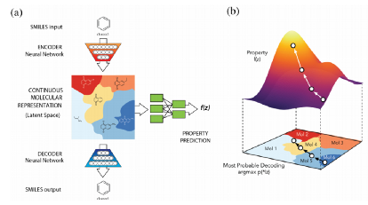

Overall, it seems that medicinal chemists have not kept pace with the rapid updates in NN models. Although new ideas and models keep emerging for virtual drug discovery, it is hard to evaluate which one is the best for applications. More choices in silico do not represent the proper scope of the applications, and impressive practical cases are still limited. The main cause may be the uncertainty of NNs in dealing with difficult tasks with limited samples, which are usually the main focus of medicinal chemists. Cooperation between researchers in cheminformatics and medicinal chemists will help identify potential problems and create more effective models, which may result in bringing impressive results. Meanwhile, the cooperation will accelerate the integration of NNs and the ‘design-make-test’ cycle, so that automated drug discovery can be realized in the future.
Drug discovery is one of the areas that can gain benefit a lot from this success of deep learning. Drug discovery is a very time-consuming and expensive task and deep learning can be used to make this process faster and cheaper.AI is also being harnessed at the lab of Ola Engkvist, section head of the hit discovery department at AstraZeneca's Discovery Sciences Department (Cambridge, UK). In collaboration with the University of Muenster (Germany), his group has been seeking to solve the problem that drug design algorithms are not able to efficiently search the whole chemical space. Their recurrent neural networks (RNNs) are now able to, through learning.
Merck is working with Atomwise, the creator of AtomNet, which uses deep learning technology for the discovery of novel small molecules. Although the project is confidential, Merck is leveraging Atomwise’s AI-based technology to scan existing medicines that could be redesigned to fight old and upcoming diseases. Merck is just one of many pharmaceutical companies partnering with AI-focused companies to advance drug discovery. Celgene partnered with GNS Healthcare to utilize its Reverse Engineering and Forward Simulation causal machine learning and simulation platform; GSK entered a $43M drug discovery collaboration with UK-based AI-driven startup Exscientia; Pfizer entered collaboration with IBM Watson for immuno-oncology drug discovery research, and the list goes on. The success of AI in drug discovery is largely due to deep learning, a field of machine learning that is built using artificial neural networks that model the way neurons in the human brain talk to each other. This technology can train systems to analyze large sets of chemical and biological data to identify drug candidates with high success rates much faster than humans. However, GlobalData emphasizes the importance of data scientists and developers monitoring the performance of these systems and taking steps to adjust or train the system to avoid repeating any errors, such as security breaches. That being said, GlobalData anticipates AI to transform the drug discovery process as we know it.